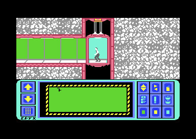
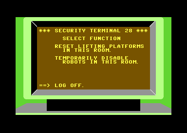

<meta charset="utf-8">
<meta name="viewport" content="width=device-width, initial-scale=1">
<title>Impossible Mission</title>
<link rel="preconnect" href="https://fonts.googleapis.com">
<link rel="stylesheet" href="https://fonts.googleapis.com/css2?family=Lato:wght@400;700;900&family=IBM+Plex+Mono:wght@400;500&display=swap">
<link rel="stylesheet" href="reference/impossible-mission-page.css">
<!-- tabs -->
<header class="hero">
  <p class="eyebrow">Commodore 64 · 1984 · Epyx</p>
  <h1>Impossible Mission</h1>
  <p class="sub">How the puzzle pieces are cut, what the pocket computer's keys do, how a robot decides what to do next, and what the clock and the score count.</p>
</header>
<main class="wrap">

<section id="pieces">
  <p class="fig">01 · The puzzle pieces</p>
  <h2 class="t">Puzzle pieces are cut from the picture with masks</h2>
  <p class="lede">Each of the nine puzzles is a random picture, and each piece is that picture seen through two of sixteen stencils.</p>
  <div class="plate">
    <div class="ctl">
      <button id="proll">Roll a new puzzle</button>
      <label><input type="checkbox" id="pflip"> random flips, as the game deals them</label>
    </div>
    <div class="pieces" id="pgrid"></div>
    <p class="cap">The puzzle's picture is made the way <code>$B0F3</code> makes it, and its four pieces are cut by a port of <code>$9C47</code>. The port matches the game's own routine, run in a 6502 simulator, on all 36 pieces of the game in the snapshot this page was made from.</p>
  </div>
  <p>A piece record is four bytes: the puzzle, a first mask, a second mask and a flags byte. Bits 0 and 1 of the flags say whether each mask is used as it is or inverted, so the four pieces of a puzzle are the picture cut along the first mask in both directions and along the second in both directions. Bits 2 and 3 flip the piece left to right or upside down.</p>
  <p>The four pieces divide the picture exactly, and only the frame, which every piece carries, is common to them. Descriptions of the game say the pieces overlap, so that three can fit before you find you must start again. In this copy they do not. The pocket computer refuses to drop a piece where any other part of it would land on something already there (IMAGES CAN'T OVERLAP, <code>$8037</code>), and the frame is the one part it lets through.</p>
  <p>A piece takes the background colour of the room it was found in (<code>$98FB</code>). Pieces of different colours cannot be put together (COLORS MUST MATCH), which is what the colour keys are for.</p>
</section>

<section id="computer">
  <p class="fig">02 · The pocket computer</p>
  <h2 class="t">A keypad for flipping, recolouring and phoning</h2>
  <p class="lede">Fire in a lift or a corridor opens the pocket computer. The joystick then moves a pointing hand, and fire presses the key under it.</p>
  <div class="shots">
    <figure><figcaption>The pocket computer, captured in an emulator.</figcaption></figure>
    <figure><figcaption>Its map of the rooms and corridors visited so far.</figcaption></figure>
  </div>
  <table class="d">
    <tr><th>Keys</th><th>What they do</th><th>Routine</th></tr>
    <tr><td>Left keys</td><td>Scroll the memory of found pieces forward and back; the bottom one is the phone</td><td><code>$7A9F</code>, <code>$7B32</code>, <code>$7BC2</code></td></tr>
    <tr><td>Top row</td><td>Flip the selected piece upside down, flip it left to right, clear the slot</td><td><code>$7901</code>, <code>$7968</code>, <code>$79E2</code></td></tr>
    <tr><td>Middle row</td><td>Switch off, undo, pause (TIME IS SUSPENDED)</td><td><code>$3D94</code>, <code>$7A61</code>, <code>$3D78</code></td></tr>
    <tr><td>Bottom row</td><td>Recolour the selected piece green, yellow or blue</td><td><code>$7A29</code></td></tr>
  </table>
  <p>A puzzle is solved when the pieces dropped into a slot add up to one of the nine solution pictures exactly (<code>$80C3</code>). The game then writes that puzzle's letter of the password into the PSW line and removes its pieces from memory.</p>
  <p>The phone calls for help, at two minutes of game time a call (<code>$7D9D</code>). One number turns the two pieces in the memory window the right way up. The other counts the pieces of the leftmost piece's puzzle and answers A SOLUTION EXISTS when there are four, NEED MORE PIECES when there are fewer (<code>$7FD7</code>). The tones it dials are on the <a href="music.html#phone">Sound and speech</a> tab.</p>
  <h3>The security terminals</h3>
  <p>Stand in front of a security terminal and push up, and it offers to reset the room's lifting platforms or to disable its robots for a while, each for one password of the matching kind (<code>$9D16</code>, <code>$A0DE</code>). The pointer starts on LOG OFF.</p>
  <div class="shots"><figure><figcaption>A security terminal, captured in an emulator. The number after SECURITY TERMINAL is the room's.</figcaption></figure></div>
</section>
<section id="robots">
  <p class="fig">03 · The robots</p>
  <h2 class="t">Each robot runs a script</h2>
  <p class="lede">The robots' behaviour is a bytecode, interpreted once a frame from the raster interrupt.</p>
  <p>Each robot has a pointer into a 256-byte script table at <code>$2112</code>, a current command with a count, and a mode (<code>$8ECC</code>). The commands test which side of the robot the agent is on, whether he is on the same level (within 20 lines) or a random bit, and skip the next command or not. Others jump, wait, turn the robot one step at a time through seven sprite frames, walk it along its platform, or fire the zap. A robot stops where its floor ends (<code>$90FB</code>), so none can walk off a ledge.</p>
  <p>The 32 behaviours a game can give a robot are 32 starting points in that table (<code>$2212</code>). This is how one robot ignores the agent while another turns to face him and fires. The floating ball runs a second, simpler language from <code>$2232</code>: wait, step, home in on the agent, loop with a counter (<code>$92CB</code>).</p>
  <p>Touching a robot or its zap kills the agent, through the sprite collision register (<code>$9504</code>). The room restarts with the agent at the door and ten minutes gone from the clock (<code>$95E4</code>). A snooze password stops the robots and the ball for 764 frames.</p>
</section>

<section id="clock">
  <p class="fig">04 · Time</p>
  <h2 class="t">Six hours on the clock, 7 hours 12 minutes on a PAL machine</h2>
  <p class="lede">The mission has until six o'clock, and the clock counts 60 frames to the second.</p>
  <p>The clock starts at 12:00:00 and counts in decimal (<code>$83A2</code>). Its seconds are 60 interrupts long, which is a second on an American NTSC machine. A European PAL machine shows 50 frames a second, so there a game second lasts 1.2 real seconds, and the full six hours take 7 hours 12 minutes. The PAL patch at <code>$3FB9</code> corrects only the ending's lip-sync (<a href="ending.html#elvin">The ending</a>).</p>
  <table class="d">
    <tr><th>Event</th><th>Cost</th><th>Evidence</th></tr>
    <tr><td>Death</td><td>10 minutes</td><td><code>$96F9</code>; tested: 12:24:47 became 12:34:47</td></tr>
    <tr><td>Phone call</td><td>2 minutes</td><td><code>$7D9D</code></td></tr>
    <tr><td>Pause button</td><td>clock stopped</td><td><code>$83A2</code> checks <code>$D5</code></td></tr>
  </table>
</section>

<section id="score">
  <p class="fig">05 · The score</p>
  <h2 class="t">Time left is worth more than everything else together</h2>
  <table class="d">
    <tr><th>Item</th><th>Points</th></tr>
    <tr><td>Puzzle piece found</td><td>100</td></tr>
    <tr><td>Password found</td><td>100</td></tr>
    <tr><td>Puzzle solved</td><td>500</td></tr>
    <tr><td>Each second left before six o'clock, if the mission is complete</td><td>1</td></tr>
    <tr><td>Mission complete</td><td>1,000</td></tr>
  </table>
  <p>Every piece, password and puzzle in the game add up to 9,900 points; finishing with five hours left earns 18,000 for the time alone (<code>$BA08</code>). The hall of fame keeps fifteen scores and five-letter names until the machine is switched off (<code>$BC04</code>).</p>
</section>
</main>
<footer style="margin:16px 0 0;padding:22px var(--gx) 0;border-top:1px solid #e0ded8;font-family:'IBM Plex Mono',ui-monospace,Menlo,monospace;font-size:12px;color:#80838a"><a href="/kit.html" style="color:#1f5fa8;text-decoration:none">Kit changelog</a> · <a href="https://github.com/gamesexplained/gamesexplained" style="color:#1f5fa8;text-decoration:none">GitHub</a> · <a href="https://discord.gg/3V9GWyRDWV" style="color:#1f5fa8;text-decoration:none">Discord</a><br>© Games Explained contributors. Write-ups, facts and symbol maps are available under <a href="https://creativecommons.org/licenses/by-sa/4.0/" style="color:#1f5fa8;text-decoration:none">CC BY-SA 4.0</a>; code under <a href="https://opensource.org/licenses/MIT" style="color:#1f5fa8;text-decoration:none">MIT</a></footer>
<script>
// Data: excerpts of the game's memory from listing.json (address, base64), see the build in work/.
const DATA = [[9955, "///P///z///////z////////////z////8///8/////////P///z/////8/////////z/8//////8////////////z//8/////8z////////8/////8////////z///////P////////////8//z///P/////8///8//8//////////////////////////////////////////+/Pjw4P+AAAAAAAAA/wMDAwMDAwP////////////////////////////////AgAAAAAAAAAAAAAAAAAAAAwMDAwMDAwP//////wAAAP//////AAAA//////8AAAAAAAAA/wAAAAAAAAD/AAAAAwMDA/8AAAD//////////////////////////////////////////////////////////////////8DAwMDAwP//AAAAAAAA//8AAAAAAAD/////////AP//8PDw8PAA//8DAwMDAwPAwMDA/wAAAAAAAAD/AAAAAAAAAP8AAAAAAAAA/wAAAAAAAAD/AAAAAwMDA/8AAAD/wMDBw8fP3/8AAIDA4PD4/wAAAQMHDx//AACAwODw//8AAAAAAAD//wMDAwMDA//////+/Pjw4Pz+/38/Hw8HP3///vz48OD///9/Px8AAP///////wAA////////AwPAwMDA/wAAAAMBAAD/AAAAwIAAAP8AAAAAAAAA/wAAAAAAAAD/AAAAAwMDA/8AAAD/wcHBwcHBwf/w8PDw8PDw/wAAAAB/f3//AAAAAP////8AAAAA/////wMDAwODg4PBwcHBwcHBwfDw8PD/////fwAAAP//////AAAA//////8PDw//////g4ODg4ODg4PAwMDA/wAAAAAAAAD/AAAAAAAAAP8AAAAAAAAA/wAAAAAAAAD/AAAAAwMDA/8AAAD/wMDBwcPDx/////7+/Pz4/wAAAQEDAwf///////////8AAICAwMDg/wMDAwMDAwPHz8/f3/////jw8ODgwMCABw8PHx8/P3/////n58PDgeDw8Pj4/Pz+AwMDAwMDAwP////+/wAAAIAAAAH/AAAAf////v8AAACBAAAA/wAAAP7//3//AAAAAwMDg/8AAAD////////fz//////////////////+/vz/AAAAAAAAAP9/f39//////4ODg4ODg4PHwcDAwMDAwP//PwAAAAAA+OAAAAAAAAAAAQEDBw8////////+/v78AwMDAwMDAwPAwMDA/wAAAAAAAX//AAAAAx////8AAAD//////wAAAPz48MD/AAAABwcPH/8AAAD//////////////////PDA//zwwAAAAAD/Pw8DAAAAAP//////Pw8D/////////////PD8/////wAAAAAAwPD8AAAAAAAAAAAAAAB/f39/fwAAAP///////z8PAwMDAwP//////wAAAP//////AAAAAMDw/P8AAAB/AAAA/wAAAP8AAAD/AAAAAwMDA/8AAAD/////AAAAAP////8AAAAA/////wAAAAD/wcHBAQEBAf/w8PDw8PDw/39/f39/f3//////wMDAwP////8AAAAA/////wAAAAD/////AAAAAPDw8PAAAAAAf39/f39/f3///////wAAAP//////AAAA//////8AAAD//////wAAAP//////AAAA//////8AAAD/AAAAAAAAAP8DBw8fP3////z48ODAgQP/Dx8/f//+/P/w4MCBAwcP/z9/////+/PBw8fPwMDAwP78+PAAAAAABw8fPwAAAAD48ODAAAAAAB8/f///AAAA48ODAwMDAwPBw8fP/wAAAIDA4fP/AAAAYPD4/P8AAAAYPH7//wAAAAYPHz//AAAAAwOHz/8AAAD////////////w8ODAAQMD/wAAePz+/v7/AAAAAAAAAP8AAAAAAAAA/38fDwcHAwP//////////4f//////////PjgwMDg//8PHz9/f////oDg8Pj4+PhwAwMDAwMDAwP//////wAAAP//////AAAA//////8AAAD8+Pj8/wAAAAAAAAD/AAAAAwMDA/8AAAD/wMDAwMDBwf8AAAA//////wAAAPj4+Pj/AAAAHx8fH/8AAAD//////wMDA8PDw8PDw8PDw8HBwP//////////+Pj4+Pj4+PgfHx8fHw8PB///////////w8PDw8ODgwPAwMDA/wAAAD8AAAD/AAAA+AAAAP8AAAABAAAA/wAAAPwAAAD/AAAAAwMDA/8AAAD///788OD4/v8AAAEAAAAA/2D4/v8/DwP/AAAAgOD4/v8PAwAAAAAA////Pw8DAwP+/////////wCA4Pj+////AAAAAACA4Pj/Pw8DAAAAAIDg+Pz4MAAAAwMDAwMDBw///////wAAAP//////AAAA/v////8AAAAAgOD4/wAAAAAAAAD/AAAAHz9///8AAAD////////f3/8AAICAwMDg/wAAAAAAAAD/AAAAAD9///8AAAAA/////wMDAwODw+PPz8fHw8PBweDw8P//////AQMH//////7///DgwIAAAf//Dx8/f//+8/vz48ODAwPAwMDA/wAAAAAAAAD/AAAAAAAAAP8AAAADBw8f/wAAAPz48MD/AAAAAwMDA/8AAAD//////v78/P+AAAEBAwMH/3/////+/Pj/4MCAAAEDB/8HH3/////////////744P4+PDw8ODg4AcPDx8fPz8/+PDw4ODAwIAPDx8/P39///78+PDgwICAAwMDAw8fP3/AwMDA/wAAAH9/f3//AAAAgIABAf8AAAD///7+/wAAAAABAQP/AAAA//////8AAAD/wMD4////x/8+fHz4+Pz//wcHDw8BAID/wMD4//8/B/8fAwAA4Pz/////fw8DA4PDw8fHz8/f3///w8CAgAAD8P7/fw8BAIAAAMD4//8/B/8fAwAA4Pz/8///fw8DA4P+/vz8/wAAAAcHDw//AAAA8P7///8AAAAAAMD4/wAAAP8fAwD/AAAA8///f/8AAAD///////////////////////z8/Pjw4OD/AAAAAAA8/v8AAAAAAAAA/wMDAwMDAwP/////////////////////8f/////jwID//////v78AAAAAAAAAAAAAwMDAwMDAwP//////wAAAP//////AAAAgMDAgP8AAAAAAAAA/wAAAAAAAAD/AAAAAwMDA/8AAAA="]];
const M = new Uint8Array(65536);
for (const [a, b] of DATA) { const s = atob(b); for (let i = 0; i < s.length; i++) M[a + i] = s.charCodeAt(i); }
const PAL = ['#000000','#ffffff','#813338','#75cec8','#8e3c97','#56ac4d','#2e2c9b','#edf171','#8e5029','#553800','#c46c71','#4a4a4a','#7b7b7b','#a9ff9f','#706deb','#b2b2b2'];
const hex = (n, w = 2) => '$' + n.toString(16).toUpperCase().padStart(w, '0');

// Port of build_piece ($9C47) with its flips ($7934, $7999), and the framing of make_puzzle_images
// ($B137). An image is 144 bytes: 18 glyphs of 8 bytes, three rows of six, as the pocket
// computer's display slots hold them.
function frameImage(img) {
  for (let y = 0x28; y >= 0; y -= 8) img[y] = 0xFF;
  for (let r = 0; r < 3; r++) {
    const b = r * 0x30;
    for (let y = 7; y >= 0; y--) img[b + y] |= 0xC0;
    for (let y = 0x2F; y >= 0x28; y--) img[b + y] |= 0x03;
  }
  const b = 2 * 0x30;
  for (let y = 0x2F; y >= 0; y -= 8) { img[b + y] = 0; img[b + y - 1] = 0; img[b + y - 2] = 0; img[b + y - 3] = 0xFF; }
  return img;
}
function flipV(img) {                                   // flip_v_step's ten calls: lines 0-20 mirrored
  const out = img.slice();
  for (let x = 0; x < 144; x++) {
    const g = x >> 3, line = x & 7, gr = Math.floor(g / 6), gc = g % 6;
    const row = gr * 8 + line;
    if (row > 20) continue;                             // the picture is 21 lines; 21-23 stay
    const nr = 20 - row;
    out[(Math.floor(nr / 8) * 6 + gc) * 8 + (nr & 7)] = img[x];
  }
  return out;
}
function rev(b) { let r = 0; for (let i = 0; i < 8; i++) if (b & (1 << i)) r |= 0x80 >> i; return r; }
function flipH(img) {
  const out = img.slice();
  for (let x = 0; x < 144; x++) {
    const g = x >> 3, line = x & 7, gr = Math.floor(g / 6), gc = g % 6;
    out[(gr * 6 + (5 - gc)) * 8 + line] = rev(img[x]);
  }
  return out;
}
// rec = [puzzle, mask1, mask2, flags]; sol(k) and mask(m) give 144-byte arrays
function buildPiece(rec, sol, mask) {
  const S = sol(rec[0]), A = mask(rec[1]), B = mask(rec[2]), f = rec[3];
  const i1 = f & 2 ? 0xFF : 0, i2 = f & 1 ? 0xFF : 0;
  let out = new Uint8Array(144);
  for (let y = 0; y < 144; y++) out[y] = ((i1 ^ A[y]) & S[y]) & (i2 ^ B[y]);
  frameImage(out);
  if (f & 8) out = flipV(out);
  if (f & 4) out = flipH(out);
  return out;
}


// ---- drawing ----
function ctx2(cv) { const c = cv.getContext('2d'); c.imageSmoothingEnabled = false; return c; }
function cellMC(c, charset, code, x, y, cols) {
  for (let r = 0; r < 8; r++) { const b = M[charset + code * 8 + r];
    for (let p = 0; p < 4; p++) { const v = (b >> (6 - 2 * p)) & 3; c.fillStyle = PAL[cols[v]]; c.fillRect(x + p * 2, y + r, 2, 1); } }
}
function cellHi(c, charset, code, x, y, fg, bg) {
  for (let r = 0; r < 8; r++) { const b = M[charset + code * 8 + r];
    for (let p = 0; p < 8; p++) { c.fillStyle = PAL[(b & (0x80 >> p)) ? fg : bg]; c.fillRect(x + p, y + r, 1, 1); } }
}
function drawTextMC(c, charset, scr, col, bg, mc1, mc2) {          // multicolour text mode, 40x25
  for (let i = 0; i < 1000; i++) {
    const cc = col[i] < 0 ? 0 : col[i] & 15, x = (i % 40) * 8, y = Math.floor(i / 40) * 8;
    if (cc & 8) cellMC(c, charset, scr[i], x, y, [bg, mc1, mc2, cc & 7]);
    else cellHi(c, charset, scr[i], x, y, cc & 7, bg);
  }
}
function sprite(c, addr, sx, sy, colour, mc, m1, m2) {               // sprite at VIC coordinates
  const x0 = sx - 24, y0 = sy - 50;
  for (let r = 0; r < 21; r++) for (let b = 0; b < 3; b++) {
    const v = M[addr + r * 3 + b];
    if (mc) for (let p = 0; p < 4; p++) { const k = (v >> (6 - 2 * p)) & 3; if (!k) continue;
      c.fillStyle = PAL[[0, m1, colour, m2][k]]; c.fillRect(x0 + b * 8 + p * 2, y0 + r, 2, 1); }
    else for (let p = 0; p < 8; p++) if (v & (0x80 >> p)) { c.fillStyle = PAL[colour]; c.fillRect(x0 + b * 8 + p, y0 + r, 1, 1); }
  }
}
// ---- sound ----
let AC = null;
const audio = () => AC || (AC = new (window.AudioContext || window.webkitAudioContext)());
function tones(freqs, start, dur) {
  const a = audio(), g = a.createGain(); g.gain.value = 0.12; g.connect(a.destination);
  for (const f of freqs) { const o = a.createOscillator(); o.type = 'triangle'; o.frequency.value = f; o.connect(g); o.start(a.currentTime + start); o.stop(a.currentTime + start + dur); }
}
const clockHz = () => document.querySelector('input[name=clk]:checked').value === 'pal' ? 985248 : 1022727;
const sidHz = (v, clk) => v * clk / 16777216;
const keyHz = (n, clk) => [sidHz(M[0x7E6E + n] | M[0x7E7A + n] << 8, clk), sidHz(M[0x7E86 + n] | M[0x7E92 + n] << 8, clk)];

// ---- the puzzle pieces ----
const PAT = 0x26E3, MASK = 0x2763;
const mask = m => M.slice(MASK + 144 * m, MASK + 144 * m + 144);
function drawImage(cv, img, colour) {
  const c = ctx2(cv); cv.width = 48; cv.height = 24; c.fillStyle = '#000'; c.fillRect(0, 0, 48, 24);
  for (let i = 0; i < 144; i++) { const g = i >> 3, row = Math.floor(g / 6) * 8 + (i & 7), x0 = (g % 6) * 8;
    for (let p = 0; p < 8; p++) if (img[i] & (0x80 >> p)) { c.fillStyle = PAL[colour]; c.fillRect(x0 + p, row, 1, 1); } }
}
function rollPuzzle() {
  const sol = new Uint8Array(144);
  for (let b = 0; b < 18; b++) { const k = Math.floor(Math.random() * 16); for (let j = 0; j < 8; j++) sol[b * 8 + j] = M[PAT + k * 8 + j]; }
  frameImage(sol);
  const ms = []; while (ms.length < 3) { const m = Math.floor(Math.random() * 16); if (!ms.includes(m)) ms.push(m); }
  const flips = document.getElementById('pflip').checked;
  const grid = document.getElementById('pgrid'); grid.innerHTML = '';
  const add = (img, col, label) => { const f = document.createElement('figure'), cv = document.createElement('canvas');
    drawImage(cv, img, col); f.appendChild(cv); const t = document.createElement('figcaption'); t.textContent = label; f.appendChild(t); grid.appendChild(f); };
  add(sol, 7, 'the puzzle');
  const recs = [[0, ms[0], ms[1], 3], [0, ms[0], ms[1], 2], [0, ms[0], ms[2], 1], [0, ms[0], ms[2], 0]];
  const union = new Uint8Array(144);
  recs.forEach((r, i) => { const f = flips ? (r[3] | (Math.random() < .5 ? 4 : 0) | (Math.random() < .5 ? 8 : 0)) : r[3];
    const p = buildPiece([0, r[1], r[2], f], () => sol, mask);
    const plain = buildPiece([0, r[1], r[2], r[3]], () => sol, mask); plain.forEach((v, j) => union[j] |= v);
    add(p, 5, `piece ${i}: masks ${r[1]}${r[3] & 2 ? '′' : ''} and ${r[2]}${r[3] & 1 ? '′' : ''}${f & 8 ? ', upside down' : ''}${f & 4 ? ', mirrored' : ''}`); });
  add(union, 3, 'all four together');
  add(mask(ms[0]), 1, 'first mask ' + ms[0]);
}
document.getElementById('proll').onclick = rollPuzzle;
document.getElementById('pflip').onchange = rollPuzzle;
rollPuzzle();
</script>
